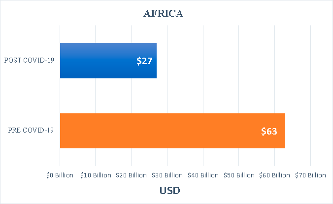
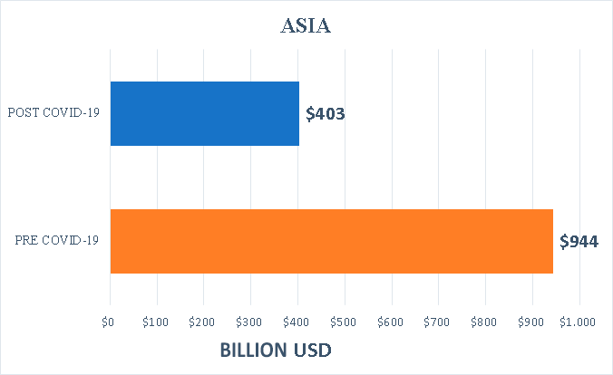

IMPACTO COVID-19
Las aerolíneas han sido fuertemente golpeadas por la pandemia, afectando
no solo sus ganancias sino la vida de trabajadores, funcionarios y
viajeros en todo el mundo. Es por esto que, se han estudiado las diferentes consecuencias principalmente
económicas que se han dejado notar por la llegada del COVID-19 a los diferentes países del mundo.
Impacto en vuelos en todo el mundo
*Haz click en el color para eliminar las columnas*
Efecto económico en aerolíneas
Se muestra la actividad económica que genero cada país cuentizada en capital, trabajo, venta de servicios, etc. Donde se observa una baja en la actividad económica post-covid en todos los continentes.
Mantente por encima del continente para conocer su actividad económica
ÁFRICA

ASIA

EUROPA
AMÉRICA
Trabajos perdidos en aerolíneas
Gasto gubernamental en aerolíneas
*Haz click en el país y verás cuánto ha gastado en sus aerolíneas, tanto privadas como nacionales*
Aerolíneas con mayor ayuda estatal
*Ranking de las aerolíneas con mayor ayuda estatal de las que se tiene información*
Proyecciones a futuro
Es importante considerar que las diferencias en los procesos de
vacunación entre los países del mundo y los problemas logísticos pueden
retrasar la reactivación, especialmente si los Gobiernos no levantan las
restricciones impuestas, principal factor limitante ante cualquier reactivación.
Asimismo, estas restricciones pueden tener afecciones incluso más significativas
que el virus, debido al daño que provoca en la economía personal, familiar y
del país.